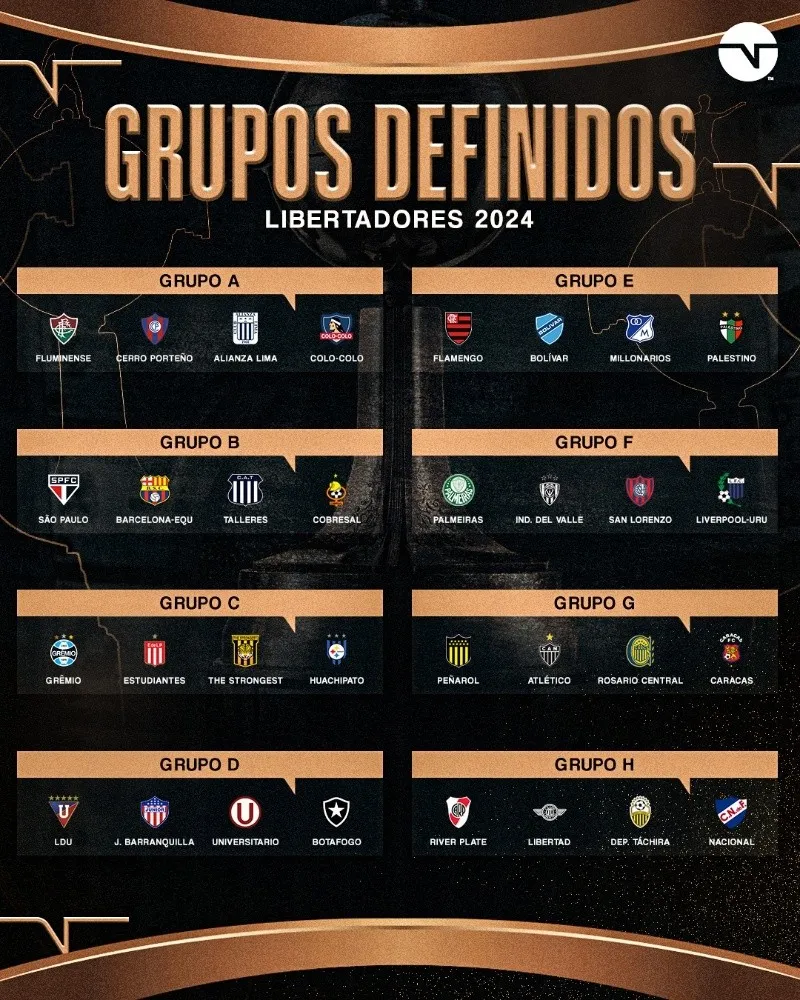

Libertadores 2024: Veja os confrontos para a fase de grupo
O sorteio da fase de grupos da Copa Libertadores da América é sempre um momento aguardado com grande expectativa pelos fãs do futebol sul-americano. Neste ano de 2024, não foi diferente, com os olhos do continente voltados para o evento que define os confrontos iniciais da competição mais prestigiosa da América do Sul. Com uma série de clubes tradicionais e emergentes participando, a emoção e a incerteza estão no ar.
A cerimônia do sorteio, realizada recentemente, proporcionou aos torcedores uma visão intrigante dos grupos que prometem batalhas épicas nos gramados. Desde clássicos regionais até embates entre gigantes do futebol sul-americano, as chaves desta edição da Libertadores prometem não decepcionar os aficionados pelo esporte.

Entre os momentos mais emocionantes do sorteio, destacam-se os embates entre equipes históricas que reavivam rivalidades antigas e desafios inéditos que prometem agitar as torcidas. Com times representando diversos países da América Latina, a diversidade cultural e futebolística se reflete nos confrontos que estão por vir.
Além das rivalidades tradicionais, o sorteio também reservou espaço para surpresas e possíveis reviravoltas. Com alguns grupos apresentando uma mistura intrigante de forças, os especialistas e torcedores já especulam sobre quais equipes podem emergir como favoritas e quais podem surpreender ao longo da competição.
Com o sorteio da fase de grupos da Libertadores 2024, a contagem regressiva para o início do torneio está oficialmente em andamento. Agora, os times têm suas cartas na mesa e os torcedores aguardam ansiosamente o pontapé inicial para ver como suas equipes favoritas se sairão neste emocionante capítulo do futebol sul-americano.